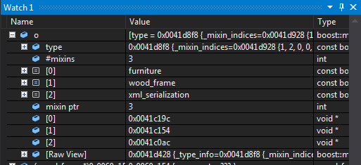
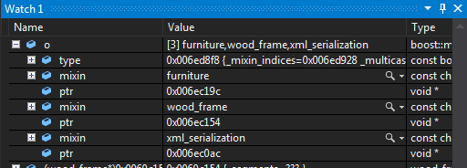
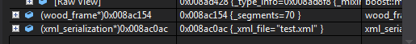

An entity-component-system (ECS) allows users to create entities which consist of components. A simplified way of thinking about that is a container of instances of unique types. Another way of thinking about said entities is like they are objects produced from multiple inheritance only they are constructed in runtime, as opposed to compile-time.
Here's a piece of code that might be used in a simple hypothetical ECS:
entity e; e.add_component(new xml_serializer); e.add_component(new book_data); // now the entity contains data and a way to serialize this data // ... // here we can test if an entity has the components we need if(e.has_component<xml_serializer>()) { e.get_component<xml_serializer>()->serialize(); }
See how we can think of e
as a container of various objects, or as a class derived from both serializer and data.
However it is not exactly a container as it cannot have two instances of
the same class, and it is not exactly a class with multiple inheritance
as its contents cannot be statically analyzed.
They allow the users to achieve true decoupling of their subsystems. For
example if we extend the above example to have a registered component of
type serializer, which
is a pure virtual class with a method virtual
void serialize() = 0,
the code example from above would still work, but we would be able to change
the last part to something a bit more useful:
if(e.has_component<serializer>()) { e.get_component<serializer>()->serialize(); }
Now all functions that want to call serialize
for an object may as well be oblivious to what the actual
serializer within the entity. Keep in mind that this is nearly impossible
to achieve with plain multiple inheritance as users would have to handle
the combinatorial explosion of different serializer's,
data's and other possible
super-classes.
The above example shows that an ECS is, in most cases, a better choice than multiple inheritance. But what about composition?
Well, an ECS is a type of composition, with one difference. An entity has no idea what kind of components may be a part of it.
Imagine a the straight-forward way to composition. An object from our system
will have methods like get_serializer(), get_data(), and more. This means that every time
we add a new sub-system, we'll have to change the object type to "enrich"
it with its new components. Removing the aforementioned limitation allows
independent sub-system development – without changing the code of
the original product. I also allows the introduction of entire subsystems
with dynamic libraries, which don't change the binary. For example, writing
an entirely new serialization mechanism – say encrypted serialization
– for a product and introducing it as an optional plug-in becomes
a breeze.
There exists a technique, often also called entity-component-system, that is not polymorphic. It can be combined to a degree with code like the one described above but it requires special maintenance.
Essentially what it does is, the entity has pointers (or sometime indexes) of concrete components, that aren't managed by it, but by the subsystems that use these components. The subsystems contain dense arrays of these components, which they process, often being oblivious of entities and other higher-level concepts.
This is done in very performance heavy pieces of software, where even the cache locality of the data is critical. Since polymorphism is incompatible with cache locality, those systems sacrifice (at least to some degree) the ease of use and maintainability for the speed.
This is especially popular in high-end games, where in order to produce state of the art graphics and physics with a decent framerate, each microsecond is of importance.
They are very popular in game development, as most objects in a game have many different aspects for different sub-systems. Still, being as powerful as they are, they find their place in many other pieces of software developed in C++, Java or C#.
It is the author's opinion that any big project with complex objects could benefit from using an ECS. Indeed games and game engines are a prime example of such a project, but there are many others. Any software that has optional dynamic library plug-ins, most CAD systems, graph editors, project management tools, and many others.
Most script-language objects natively support a functionality resembling the polymorphic form of these systems, and most of them call it Mixins.
If you're using Microsoft Visual Studio, you can install special watch visualizers
which will make adding boost::mixin::object
in a watch window a better experience.
There are two ways to do this, which will work on both the full and express versions of Visual Studio.
The result when adding a watch on an object should resemble this:

To install this visualizer:
boost_mixin.natvis
in your Boost.Mixin instalation. It should be in the tools subdirectory.
<Documents>\<Visual Studio
Version>\Visualizers. If the directory doesn't
exist, create it manually.
%VSINSTALLDIR%\Common7\Packages\Debugger\Visualizers. You will need administrator
access to do this.
The result when adding a watch on an object should resemble this:

To install this visualizer:
autoexp.txt in your Boost.Mixin installation.
It should be in the tools
subdirectory.
%VSINSTALLDIR%\Common7\Packages\Debugger\autoexp.dat
in a text editor
[hresult]
section.
autoexp.txt
just before the line [hresult]
To use this visualizer with Visual Studio versions 2012 or newer, you should
also go to in your menus to Tools
> Options
> Debugging
> Edit
and Continue
and there check Enable native Edit
and Continue.
Warning: This will also disable any natvis visualizers you might have installed.
No matter which (if any) of these visualizers you use, to watch concrete mixin from an object, you should add a new watch where you explicitly cast the address to the correct mixin type. The visualizers only help you quickly find the address and the target type. They don't (and unfortunately can't) perform the cast.
If you perform the cast correctly, the result will resemble this:
